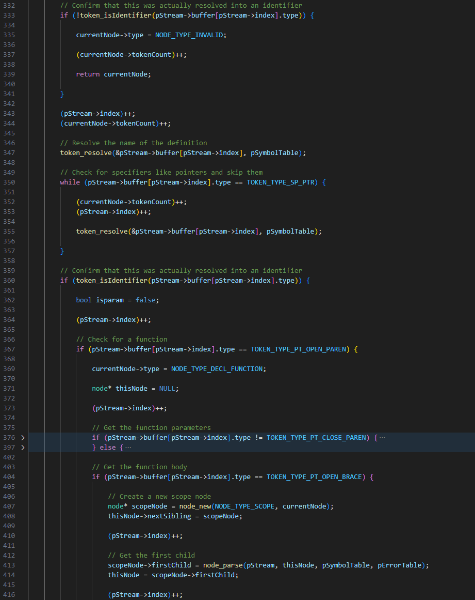

Over the course of about a month, I've been planning and working on a parser for my C-like language, C*. For those of you who want to know more about C*, it is a language which intends to modernize C, improving upon its issues that it has accumulated over time. It intends to remove old and outdated features like "typedef" and "using" and replace them with more modern features like "namespace" and "using". I've been quite busy on it, and I've finally managed to get something rudimentary in place!
The parser works on recursive descent, meaning it recursively calls itself to parse the next token in the stream. It starts from the highest-level constructs like functions and declarations, and works down to the lowest-level constructs like expressions and literals. This is pretty typical of any parser. It unfortunately lacks anything more than basic function and variable recognition, and it can't even perform arithmetic yet. Regardless, it is a start, and that's what I'm happy about.
One of the biggest issues I believe I will be facing with C* is going to be error handling. Errors in programming languages are everywhere, and just one minor mess-up can completely break the compiler. It's mainly in the form of segmentation faults and tokens becoming misplaced, so it'll surely take me some time to get to a point where it is a functional parser. Once parsing is finished, everything is smooth sailing from there. I can move onto IR generation, which should hopefully be a lot simpler than the hellscape that is trying to manage 1000 edge cases per statement. It is not by any means fun, but if I want something up and functioning, I must do it.
For the time being, I believe I'll skip out on the error handling and just get the parser up and running. I can always come back to it later, and I don't want to spend time on it when the compiler just needs to be functional. Error handling is complex, and I think I'd like to handle that at a later date. I'm currently satisfied with the concept of simply getting a functional parser and then handling errors later, as I really just want to have a functional program which turns my code into a functioning executable. Regardless, I am happy with the progress so far and hope to get past this part within the next few months.
For anyone curious to check C* out, the repo can either be found on my GitHub or directly through here. It is open-source, and if you'd like to contribute, feel free to fork the repo and make a pull request. I'd be delighted to see what other people decide to do to improve upon my compiler.